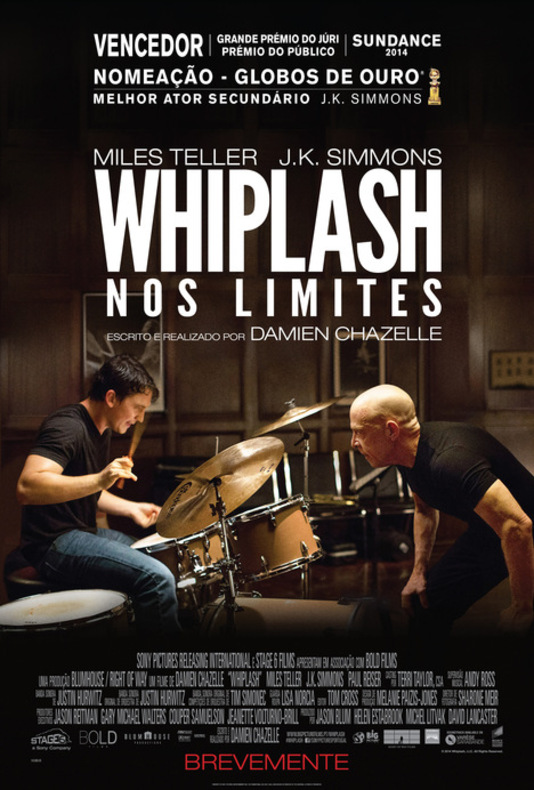

|

|
Présentaion de whiplash:Nom du film: whiplash Réalisateur: Damien Chazelle Scénario: Damien Chazelle Acteurs principaux: Miles Teller, J.K. Simmons, Paul Reiser Genre du film: Drame, Musical Synopsis:Andrew, 19 ans, rêve de devenir l’un des meilleurs batteurs de jazz de sa génération. Mais la concurrence est rude au conservatoire de Manhattan où il s’entraîne avec acharnement. Il a pour objectif d’intégrer le fleuron des orchestres dirigé par Terence Fletcher, professeur féroce et intraitable. Lorsque celui-ci le repère enfin, Andrew se lance, sous sa direction, dans la quête de l’excellence... |